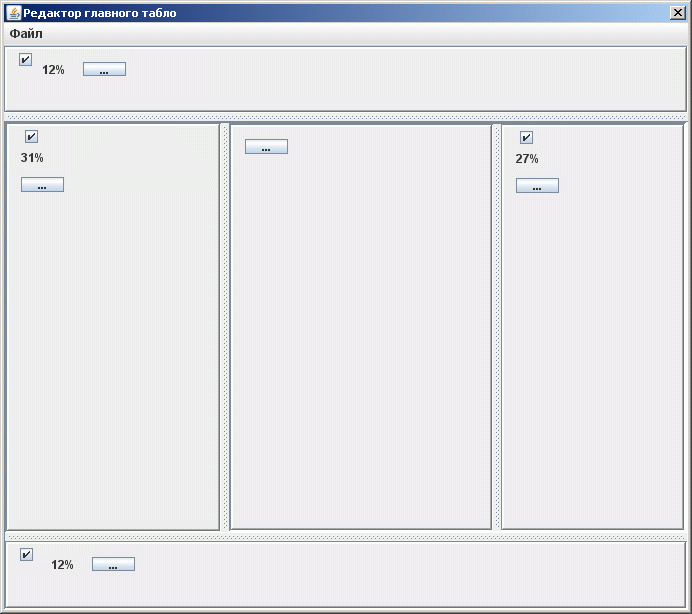
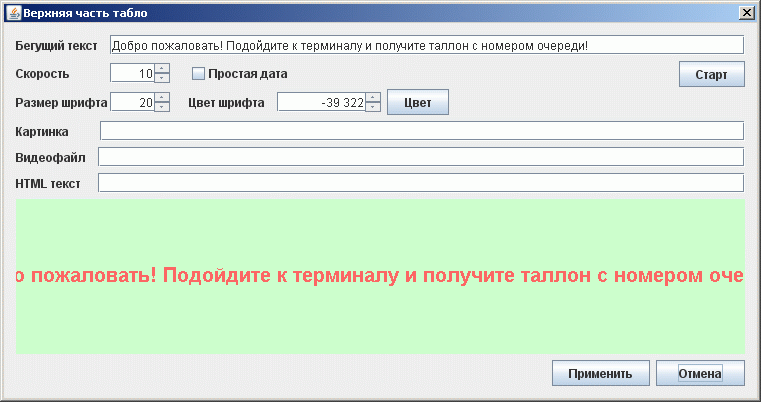
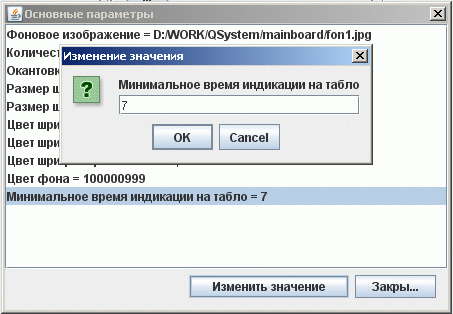

Редактор главного табло системы
Главное табло системы включает в себя четыре информационных сектора и центральный сектор для отображения хода очереди и вызова клиентов.

Размеры секторов можно изменять передвигая граници мышью. Также при необходимости сектора можно вообще отключить.
Детально каждый сектор табло настраивается отдельно.
Настройка информационного сектора
В информационном секторе можно выводить следующую информацию:

Настройка центрального сектора вывода информации по прохождению очереди
В этом секторе настраивается стиль и вид вывода информации по прохождению очереди:
